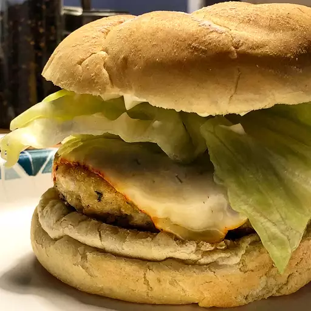

Chicken Burger

Description
A chicken burger the whole family enjoys! Natasha is my eldest daughter, and her eyes light up when I announce we're having these for dinner. The onion can be finely chopped, but with three kids, we prefer grating it so as to hide it. I usually serve these with mashed potatoes and Caesar salad for a very comforting meal!
Ingredients
- Ground chicken: This recipe starts with a pound of extra-lean ground chicken.
- Bread crumbs: Use store-bought bread crumbs
- Onion: Half an onion lends texture and flavor.
- Egg: An egg adds moisture and helps bind the chicken patties together.
- Seasonings: These chicken burgers are seasoned with fresh garlic, salt, and pepper.
- Oil: Cook the chicken burger patties in olive oil on the stove.
Steps to make a delicious Chicken Burger
- Mix the chicken, half of the crumbs, onion, egg, and seasonings in a bowl.
- Shape the mixture into oval-shaped patties.
- Coat the patties into the remaining bread crumbs.
- Cook the patties until they are deeply brown on both sides.
back
next
home